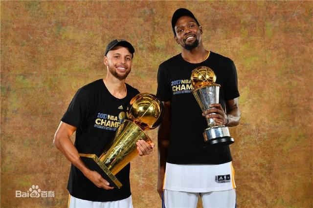

篮球名人故事
科比布莱恩特
科比堪称NBA最勤奋的球员，他的人生信条就是：篮球就是生命。科比的天赋也许不是联盟中最顶级的，但所有人都听说他的洛杉矶凌晨四点太阳的故事，科比正是通过不断的练习，将自己训练成一部篮球机器，不断学习和完善自己的篮球技巧，终于修炼成一代篮球大神。
1.凌晨四点的洛杉矶
记者问科比：“你为什么能如此成功呢？”
科比反问道：“你知道洛杉矶凌晨四点是什么样子吗？”
记者摇摇头：“不知道，那你说说洛杉矶每天早上四点钟究竟什么样儿？”
科比挠挠头，说：“满天星星，寥落的灯光，行人很少。” 说到这科比笑了，“究竟怎么样，我也不太清楚。但这没有关系，你说是吗？每天洛杉矶早上四点仍然在黑暗中，我就起床行走在黑暗的洛杉矶街道上。一天过去了，洛杉矶的黑暗没有丝毫改变；两天过去了，黑暗依然没有半点改变；十多年过去了，洛杉矶街道早上四点的黑暗仍然没有改变，但我却已变成了肌肉强健，有体能，有力量，有着很高投篮命中率的运动员。”
“凌晨四点的洛杉矶”代表的正是科比的努力，相信大部分人都知道，科比只是一个13号秀而已，他的生涯是从替补开始的，然而当他退役之时再看看他的成就，你可以说科比是NBA历史总统山那群怪物中起点最低的一个，但这不是恰好说明了科比有多么努力么？
2.获得奥斯卡小金人
科比写给篮球的诗，叫做《亲爱的篮球》，估计很多人都读过，在科比的退役演讲上面科比当众宣读过。这首诗将科比的曼巴精神提现的淋漓尽致，同时也鼓舞了无数人。根据这首诗改编的同名动画短片，虽只有短短的6分钟，但却精心制作了8个月，于18年3月5日，获得了奥斯卡动画短片奖。看来科比的导演才华，跟他的篮球技术一样出色。
3.手指脱臼继续打
这是与马刺的一场比赛，当时科比受伤，手指脱臼。打过球的都知道出手投篮的时候手指是必须发力的，按理说科比应该是去治疗，这场比赛不会再打，然而他却让队医给他掰回去，那一刻镜头显示科比的表情痛苦不堪。在常人看来这只是一场普通的比赛而已，完全不必那么拼，这也从侧面看出科比对胜利的渴望
4.跟腱断裂依旧坚持完成罚球
当时与勇士的比赛科比在一次突破中跟腱断裂，所有人觉得科比完了，然而令人肃然起敬的是，他一瘸一拐的走上场完成罚球。“MVP，MVP，MVP”的呐喊响彻在球馆的每一个角落！实际上那年湖人正处于季后赛的边缘，科比承诺要把湖人带入季后赛，几乎每场都是拼尽全力，即使有多大的痛苦科比都可以忍受，只要能够打球，能够为球队争取胜利，他愿意付出自己的一切。要知道那一年科比正是跟腱断裂后走下了神坛，而湖人到现在也再也没进入过季后赛。
斯蒂芬库里
2016年4月14日，北美职业篮球联赛(NBA)产生了一项世界震惊的新记录，卫冕冠军金州勇士队，以73胜9负的战绩结束了常规赛，超越了篮球之神迈克尔・乔丹率领芝加哥公牛队在20年前创下的72胜10负的历史最佳战绩。20年间，从未有球队接近过70胜，更没有人能相信这个记录会被打破。
而这个创造了历史记录球队的核心，正是蝉联NBA联盟MVP(最有价值球员)、2015-2016赛季NBA联盟得分王、抢断王、三分王的斯蒂芬・库里。 相比于现在的星光璀璨，斯蒂芬・库里当年受到的质疑、排斥甚至屈辱，即使是在NBA这个无数角色球员逆袭成为球星的励志故事制造机里，也未曾有过如此疯狂的前例。 世界对库里的轻视，从他高中毕业就开始了。
那一年，斯蒂芬高中毕业，在高中篮球联赛打出名堂的他，满怀信心和期望申请名校杜克大学的奖学金，然而一向慧眼识珠的杜克主帅老K教练却认为库里身材太弱小，适应不了NCAA的强度，直接拒绝了他。
于是，戴尔・库里带着儿子走遍了全美各大篮球名校，整个大西洋海岸联盟都没有选择库里，最终，只有1700名学生，NCAA一级联赛中规模最小、1969年以来从没在NCAA锦标赛赢过球的戴维森学院，从这个孩子身上看到了一些不同寻常的特质。他们表示愿意为库里提供奖学金，招进了库里。终于，库里在坎坷中拉开了大学篮球生涯的序幕。
冷眼造就英雄。
2008年的3月21日，戴维森学院大二的斯蒂芬・库里，面对全国第七的冈萨加大学，三分球出手10次，投进了8个，全场得到40分，带领球队轻松获胜。
那是1969年以来，戴维森学院在NCAA锦标赛赢的第一场球。
两天后，NCAA二号种子乔治城大学也被撂倒在地。那天晚上，上半场落后17分的戴维森，下半场完成了逆转，而导演这场大戏的，就是下半场20分钟一口气射下25分的库里。
随着库里在大学的疯狂表现，2009年库里宣布参加NBA选秀。
2009年NBA选秀，斯蒂芬・库里在首轮第7顺位被金州勇士队选中。
2009年10月29日，在勇士与火箭的比赛中，斯蒂芬・库里首发出场，36分钟12投7中拿到14分2篮板7次助攻和4次抢断，完成NBA首秀。
2010年2月2日，NBA官方公布了1月份月最佳新秀名单，斯蒂芬・库里当选西部月最佳新秀。在1月份的比赛当中，库里场均出场39.5分钟排在所有新秀的首位，场均19.1分排在第二位，场均5.1次助攻排在第二位，场均4.4个篮板排在第七位，场均2次抢断排在首位。
2015年6月17日，勇士以总比分4-2战胜骑士，获得2014-15赛季NBA总冠军

2017年6月13日，总决赛第五场勇士129-120战胜骑士，从而以4-1的大比分获得2016-17赛季NBA总冠军。
